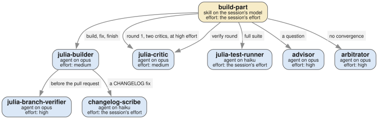
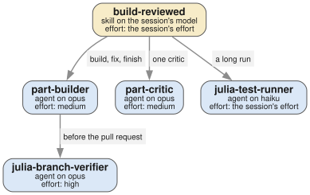
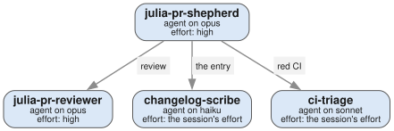
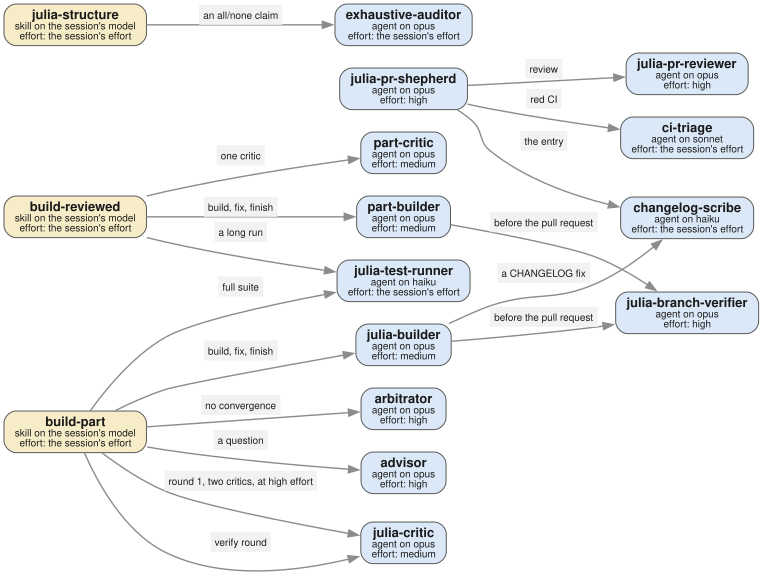

Agents at work
An agent can start another agent. Claude Code calls this a spawn: the first agent gives a task to a new agent, the new agent works in a context of its own, and it returns one report. Some skills spawn agents too. A skill runs in the session that loads it, so the session does the spawn.
This page shows who spawns whom. Each figure is a call graph: a box is an agent or a skill, and an arrow goes from the caller to the agent that it spawns. The text on an arrow says when or why the caller spawns.
How to read a figure
Each box shows three facts:
- The name, in bold. A blue box is an agent of
agents/. A yellow box is a skill ofskills/. - The model. The source names a tier,
large,mediumorsmall, and the[claude]table ofexamples/models.tomlgives the model of each tier:opus,sonnetandhaiku. Your ownmodels.tomlchanges these models (see profile.md). A source with nomodel:runs on the model of its caller, and its box says "the caller's model". A skill runs in the session that loads it, on the session's model, so a skill box says "the session's model". - The effort, from the source's
effort:. A source with noeffort:runs at the effort of the session, and its box says "the session's effort". Where a caller sets a different effort for one spawn, the arrow says so: "at high effort".
The figures show Claude Code. The agents that only OpenCode has, and the councils of OpenCode, are not drawn.
The arrows come from one file, docs/figures/calls.toml. It has one entry for each spawn, with the file:line of the instruction that spawns. harness test checks each entry against the sources, and the docs build draws the figures from it. So a figure changes when an agent changes.
The builder-critic loop: build-part

You start build-part in your session when a part of a task file is ready to build. The skill does not write code. It spawns julia-builder to build the part, and then a new julia-critic to judge the result. In round 1, two critics judge at high effort, and each one sees only the branch, never the builder's report. The critic that judges a fix sees only the fix. Beside each critic, julia-test-runner runs the full test suite. A question inside the loop goes to the advisor, and a loop that does not converge goes to the arbitrator. Before the pull request, the builder spawns julia-branch-verifier, and it can spawn changelog-scribe for a fix of the CHANGELOG.
The work is split because a context that wrote the code does not judge it well. A fresh critic with no knowledge of the builder's reasons finds more defects. A long suite run goes to a small agent, so that the large contexts of the builder and the critic do not wait on it.
A smaller loop: build-reviewed

A part of tier reviewed is small, with a fast gate. You start build-reviewed in a session on the large model. It spawns one part-builder and keeps it for the whole part. When the builder is ready, the skill spawns one part-critic, which judges the work once and blind. A run longer than five minutes goes to julia-test-runner. Before the pull request, the builder spawns julia-branch-verifier.
The split is smaller here: one builder, one critic. Your session reads the result before the finish, so it is the second reviewer.
From review to green CI: julia-pr-shepherd

You spawn julia-pr-shepherd with a pull request of a Julia package. It does not review the pull request itself: it spawns julia-pr-reviewer, which posts the review. Then the shepherd fixes the findings. When the fix changes behaviour, it spawns changelog-scribe for the CHANGELOG entry. When CI is red in several jobs, it spawns ci-triage to separate the real failures from the known ones.
The review comes from a context that has not decided how to fix anything. So the findings are not shaped by the fix.
Every spawn

This figure shows every entry of calls.toml. It adds one skill: julia-structure sends a claim that nothing uses a name to exhaustive-auditor. An agent that is not in this figure is spawned only from your session. Only the agents with the tool agent can spawn: julia-builder, part-builder and julia-pr-shepherd. Each spawn costs a new context, so an agent spawns only where a fresh context or a smaller model does the work better.